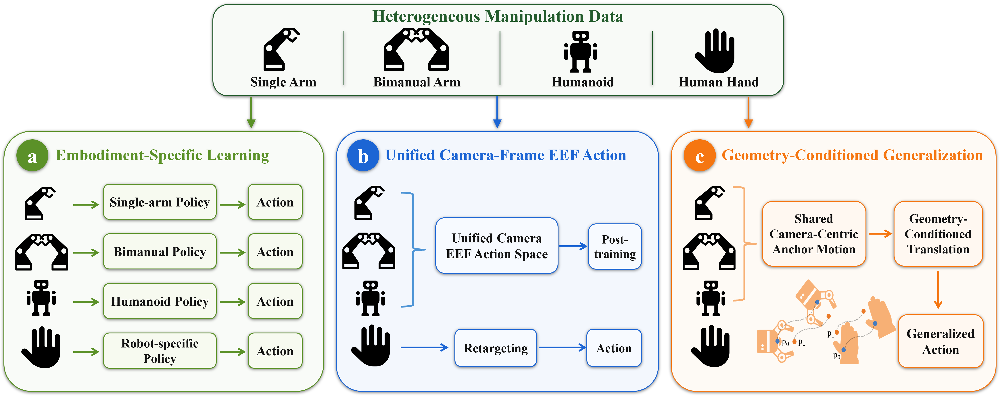
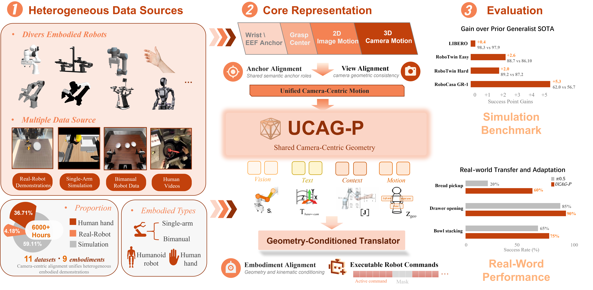
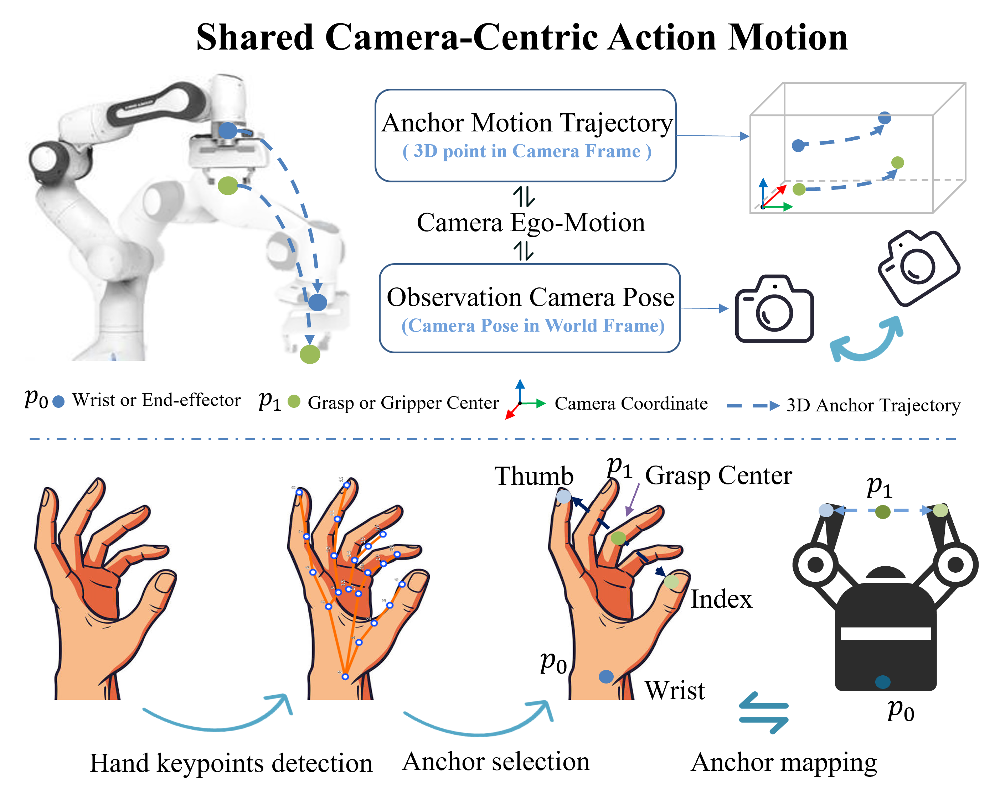
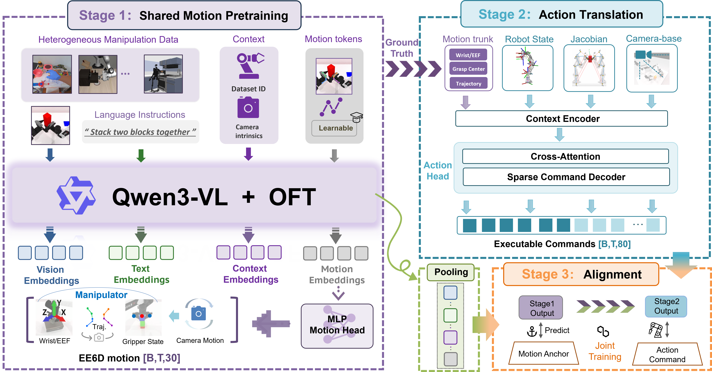
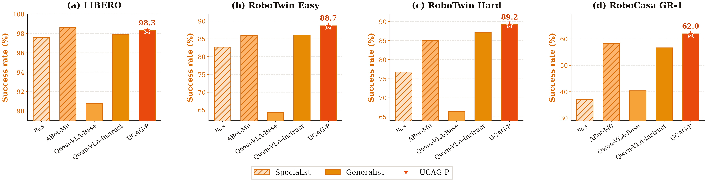
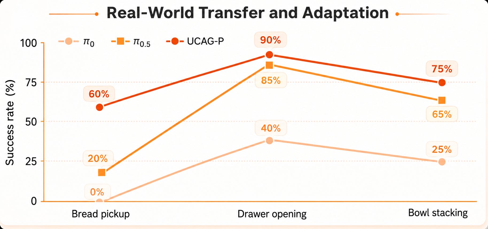
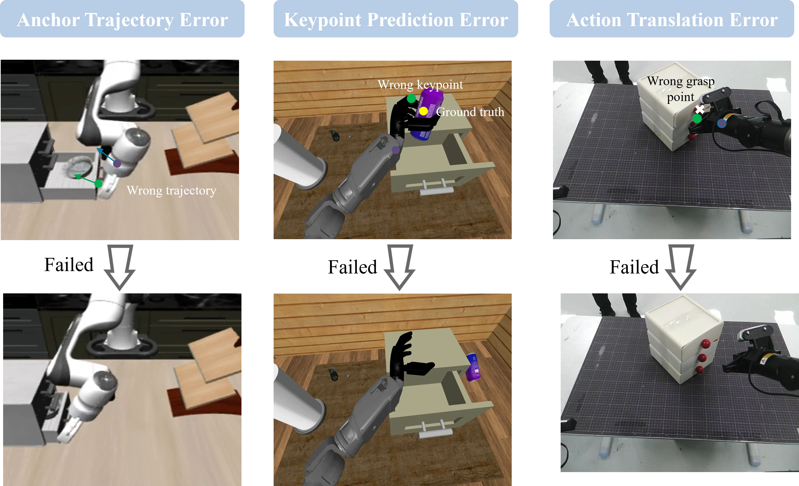

01
Extract shared supervision
Hand landmarks define camera-observable wrist and grasp-center anchor motion.

Scaling generalist vision-language-action (VLA) policies is severely bottlenecked by the inherent heterogeneity of embodied data, which spans diverse robot morphologies, camera configurations, and low-level action spaces. Existing paradigms typically address this mismatch through explicit action retargeting, human-to-robot video synthesis, or dataset-specific adaptation branches, fundamentally hindering the joint learning of a unified policy. We introduce UCAG-P, a camera-centric unified action formulation that structurally aligns heterogeneous embodied datasets into a shared geometric action space. Rather than treating robot-specific commands as the shared policy target, UCAG-P represents manipulation through camera-observable anchor motion in image and camera-frame coordinates, treating robot arms, humanoids, and human hands as different embodiments of a common action schema. A geometry-conditioned action translator combines predicted motion with target-embodiment kinematics to produce executable controls. The resulting decoupled architecture allows a shared VLA policy to learn transferable manipulation geometry while retaining embodiment-specific controllability. UCAG-P is trained on 4.03K hours of robot and simulation data and 2.34K hours of human demonstrations. A single checkpoint reaches 98.3% on LIBERO, 88.7% and 89.2% on RoboTwin Easy and Hard, 82.0% zero-shot on LIBERO-Plus, and 62.0% on RoboCasa GR-1, without benchmark-specific fine-tuning.
Paper at a glance

Success rate (%) · one checkpoint · no benchmark-specific post-training

The idea
We introduce UCAG-P, a camera-centric unified action formulation for heterogeneous embodied manipulation. Instead of using robot-specific commands as the shared target, UCAG-P represents manipulation through camera-observable anchor motion in image and camera-frame coordinates.
This formulation treats robot arms, humanoids, and human hands as different embodiments of a common action schema. A geometry-conditioned action translator then converts the shared prediction into the control representation required by the target robot.

The method
UCAG-P separates the representation that should be shared from the execution details that should remain embodiment-specific.

Train the VLM backbone and shared motion head on all robot and human samples with available geometric supervision, establishing p0/p1 anchor motion as the common action interface.
Train the translator from ground-truth camera-frame trajectories, robot state, calibration, Jacobians, and executable labels, while masking inactive command dimensions.
Jointly optimize the shared motion head and translator on mixed robot-human data, using policy-predicted trajectories so training matches inference-time execution.
Human demonstrations supervise camera-observable wrist and grasp-center motion. The policy learns this shared geometric target, while the action translator combines it with robot state, kinematics, and camera geometry to produce executable commands.
Hand landmarks define camera-observable wrist and grasp-center anchor motion.
The policy predicts a shared action sequence in camera-centric coordinates.
Robot state, kinematics, and camera geometry turn shared motion into executable commands.
Track hand wrist and grasp-center anchors during bimanual bowl stacking.
Represent bowl manipulation as synchronized camera-centric anchor geometry.
Translate shared bowl motion into embodiment-specific robot commands.
Track left- and right-hand wrist and grasp-center anchors during blackboard interaction.
Represent the observed hand trajectories as synchronized camera-centric anchor geometry.
Translate the shared motion into embodiment-specific commands for the robot arm.
Qualitative rollouts
Representative simulation and real-world executions across single-arm, bimanual, humanoid, and human-to-robot settings.
Evidence
We evaluate single-arm, bimanual, humanoid, out-of-distribution, cross-embodiment, and real-robot tasks.



Limitations
Errors in camera calibration, depth estimation, embodiment kinematics, or hand-keypoint localization can propagate into the camera-centric target and downstream controller. Cross-embodiment transfer remains challenging, especially for contact-rich and articulated tasks.
Citation
Public arXiv version: arXiv:2608.26058 (2026).
@article{xu2026ucag-p,
title={One Policy, Many Embodiments: Unified Camera-Centric Action Geometry Pre-training for Heterogeneous Embodied Manipulation},
author={Shaoqing Xu and Fang Li and Guozhi Zhan and Zhixiang Duan and Yuhan Wang and Yuechen Luo and Shengyin Jiang and Hanbing Li and Zhiying Du and Longlong Wang and Longmei Jiang and Weixiang Liang and Ying Gong and Yong Pan and Ziping Zhao and Zhiyuan Chen and Yangwei You and Kun Ma and Qinyuan Liu and Hangjun Ye and Zhi-xin Yang},
journal={arXiv preprint arXiv:2608.26058},
year={2026}
}